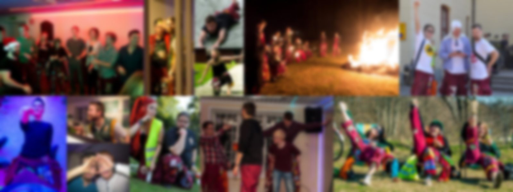

Gefleteknologerna
Inspark
En vecka fylld med roliga aktiviteter för dig som är ny student.
Vad är Insparken?
Den första tiden som student kan vara rätt överväldigande, därför har vi insparken. En vecka fylld med roliga aktiviteter där du lär känna folk som du kommer att komma i kontakt med under din studietid. Första dagen blir du kidnappad av phaddrarna och sedan följer en superkul vecka! Gefleteknologerna har ett nära samarbete med VOX (Vård & Omsorg i X-län) som även pågår under insparken. Där går vi under samlingsnamnet TechnoVOX! Vissa aktiviteter sker även tillsammans med andra studentföreningar vid Högskolan i Gävle.
Varför vill jag vara med på insparken?
För att på enklaste sätt komma in i gemenskapen i studentlivet. Tänk dig en vecka med nya ansikten där alla siktar mot samma mål! Du får en chans att se vad Gävle och Högskolan (utöver studierna) har att erbjuda.
Jag funderar på att va Phadder och har en del funderingar, vart vänder jag mig?
Vi har en FAQ för Phaddrar på följande länk: FAQ för Phaddrar! Besvaras inte din fråga där kontakta insparksansvarig via mejlen: alderman@gefleteknologerna.se.
Vem hör jag av mig till om jag har ytterligare frågor?
Introduktionsutskottet för Gefleteknologerna är dem som planerar och ansvarar över insparken och välmåendet över alla involverande inklusive nya studenter. Du når dem på mejlen: alderman@gefleteknologerna.se
Hoppas vi ses!
